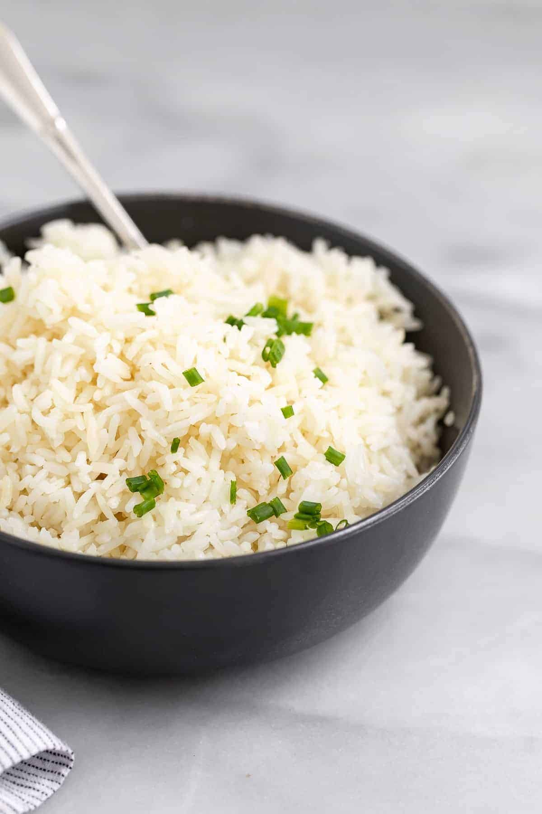

How to Cook Jasmine Rice on the Stovetop

Ingredients
- Jasmine Rice
- Water
- A stove
Directions
- Start by rinsing the rice to remove as much starch powder as possible — this will keep your rice from getting too gummy. Rinse in a fine mesh strainer until the water runs clear.
- Add water and rice to a pot (using 1 ¼ cup water for 1 cup of rice). Add salt to taste.
- Bring the water to a boil.
- Lower the heat to low and cover the pot with a lid. Let the rice simmer until all the water is absorbed, or about 10 to 15 minutes. When checking for doneness, be sure to check the rice at the bottom of the pot, using a wooden spoon to make a well.
- Remove the pot from heat and allow the rice to rest for 10 minutes. Fluff with a fork and serve.